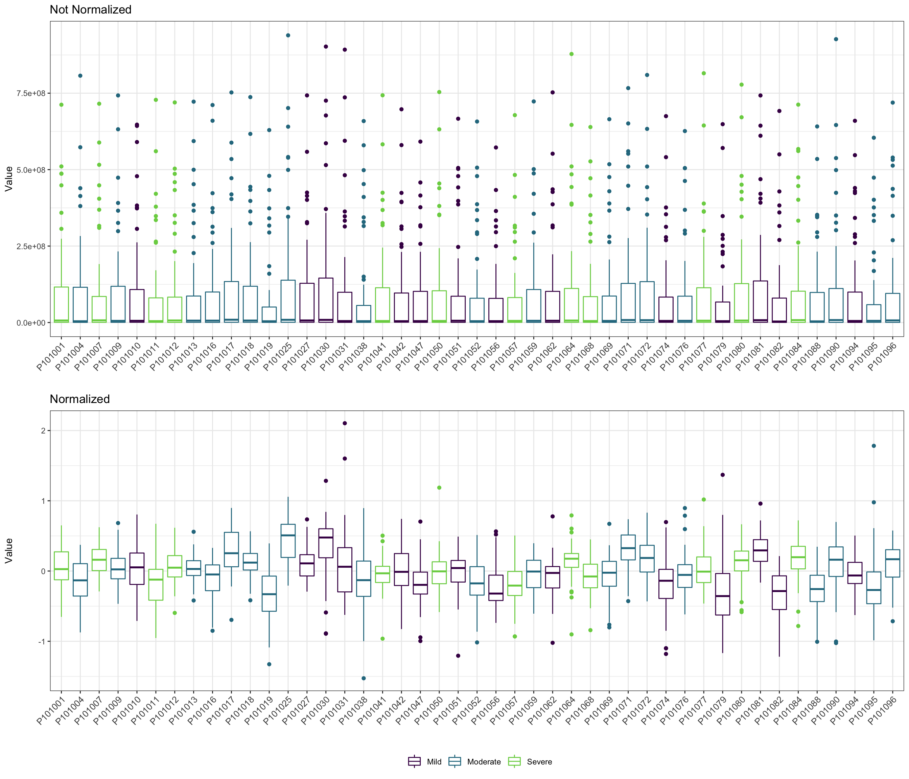

Chapter 2 Data Processing
Although the horrible experience of data analysis by using MetaboAnalystR R package (Pang et al. 2020), its thought of data processing are very useful. Therefore, this template is based on the workflow from MetaboAnalystR.
We integrated R packages and our own scripts to build the data analysis template on metabolomic data. Particularly, we thanks very much for POMA R package (Castellano-Escuder et al. 2021). POMA is a flexible data cleaning and statistical analysis processes in one comprehensible and user-friendly R package.
2.1 Loading packages
knitr::opts_chunk$set(warning = F)
library(dplyr)##
## Attaching package: 'dplyr'## The following objects are masked from 'package:stats':
##
## filter, lag## The following objects are masked from 'package:base':
##
## intersect, setdiff, setequal, unionlibrary(tibble)
library(POMA)## Welcome to POMA!
## Version 1.7.2
## POMAShiny app: https://github.com/pcastellanoescuder/POMAShiny
## For more detailed package information please visit https://pcastellanoescuder.github.io/POMA/library(ggplot2)
library(ggraph)
library(plotly)##
## Attaching package: 'plotly'## The following object is masked from 'package:ggplot2':
##
## last_plot## The following object is masked from 'package:stats':
##
## filter## The following object is masked from 'package:graphics':
##
## layoutlibrary(readxl)
library(SummarizedExperiment)## Loading required package: MatrixGenerics## Loading required package: matrixStats##
## Attaching package: 'matrixStats'## The following object is masked from 'package:dplyr':
##
## count##
## Attaching package: 'MatrixGenerics'## The following objects are masked from 'package:matrixStats':
##
## colAlls, colAnyNAs, colAnys, colAvgsPerRowSet, colCollapse, colCounts, colCummaxs, colCummins,
## colCumprods, colCumsums, colDiffs, colIQRDiffs, colIQRs, colLogSumExps, colMadDiffs, colMads, colMaxs,
## colMeans2, colMedians, colMins, colOrderStats, colProds, colQuantiles, colRanges, colRanks, colSdDiffs,
## colSds, colSums2, colTabulates, colVarDiffs, colVars, colWeightedMads, colWeightedMeans,
## colWeightedMedians, colWeightedSds, colWeightedVars, rowAlls, rowAnyNAs, rowAnys, rowAvgsPerColSet,
## rowCollapse, rowCounts, rowCummaxs, rowCummins, rowCumprods, rowCumsums, rowDiffs, rowIQRDiffs, rowIQRs,
## rowLogSumExps, rowMadDiffs, rowMads, rowMaxs, rowMeans2, rowMedians, rowMins, rowOrderStats, rowProds,
## rowQuantiles, rowRanges, rowRanks, rowSdDiffs, rowSds, rowSums2, rowTabulates, rowVarDiffs, rowVars,
## rowWeightedMads, rowWeightedMeans, rowWeightedMedians, rowWeightedSds, rowWeightedVars## Loading required package: GenomicRanges## Loading required package: stats4## Loading required package: BiocGenerics##
## Attaching package: 'BiocGenerics'## The following objects are masked from 'package:dplyr':
##
## combine, intersect, setdiff, union## The following objects are masked from 'package:stats':
##
## IQR, mad, sd, var, xtabs## The following objects are masked from 'package:base':
##
## anyDuplicated, append, as.data.frame, basename, cbind, colnames, dirname, do.call, duplicated, eval,
## evalq, Filter, Find, get, grep, grepl, intersect, is.unsorted, lapply, Map, mapply, match, mget, order,
## paste, pmax, pmax.int, pmin, pmin.int, Position, rank, rbind, Reduce, rownames, sapply, setdiff, sort,
## table, tapply, union, unique, unsplit, which.max, which.min## Loading required package: S4Vectors##
## Attaching package: 'S4Vectors'## The following object is masked from 'package:plotly':
##
## rename## The following objects are masked from 'package:dplyr':
##
## first, rename## The following objects are masked from 'package:base':
##
## expand.grid, I, unname## Loading required package: IRanges##
## Attaching package: 'IRanges'## The following object is masked from 'package:plotly':
##
## slice## The following objects are masked from 'package:dplyr':
##
## collapse, desc, slice## Loading required package: GenomeInfoDb## Loading required package: Biobase## Welcome to Bioconductor
##
## Vignettes contain introductory material; view with 'browseVignettes()'. To cite Bioconductor, see
## 'citation("Biobase")', and for packages 'citation("pkgname")'.##
## Attaching package: 'Biobase'## The following object is masked from 'package:MatrixGenerics':
##
## rowMedians## The following objects are masked from 'package:matrixStats':
##
## anyMissing, rowMedians# rm(list = ls())
options(stringsAsFactors = F)
options(future.globals.maxSize = 1000 * 1024^2)2.2 Importing data
The dataset is from the Zeybel-2022 published paper (Zeybel et al. 2022).
- features table
profile <- readxl::read_xlsx("./dataset/OmicsDataSet-Zeybel-2022.xlsx", sheet = 6)
head(profile)## # A tibble: 6 × 67
## BIOCHEMICAL `SUPER PATHWAY` `SUB PATHWAY` `COMP ID` PLATFORM `CHEMICAL ID` RI MASS PUBCHEM CAS KEGG
## <chr> <chr> <chr> <dbl> <chr> <dbl> <dbl> <dbl> <chr> <chr> <chr>
## 1 (14 or 15)-methylpalmita… Lipid Fatty Acid, … 38768 LC/MS N… 100002945 5695 269. 8181;1… <NA> C169…
## 2 (16 or 17)-methylstearat… Lipid Fatty Acid, … 38296 LC/MS N… 100002356 5993 297. 3083779 2724… <NA>
## 3 (2 or 3)-decenoate (10:1… Lipid Medium Chain… 63436 LC/MS N… 100021502 4990 169. <NA> <NA> <NA>
## 4 (2,4 or 2,5)-dimethylphe… Xenobiotics Food Compone… 62533 LC/MS N… 100020519 3474 201. <NA> <NA> <NA>
## 5 (N(1) + N(8))-acetylsper… Amino Acid Polyamine Me… 57814 LC/MS P… 100016038 3080 188. 123689… <NA> C006…
## 6 (R)-3-hydroxybutyrylcarn… Lipid Fatty Acid M… 43264 LC/MS P… 100003926 2400 248. 534816… <NA> <NA>
## # … with 56 more variables: `SampleID HMDBID` <chr>, P101001 <dbl>, P101012 <dbl>, P101030 <dbl>, P101031 <dbl>,
## # P101050 <dbl>, P101059 <dbl>, P101071 <dbl>, P101072 <dbl>, P101084 <dbl>, P101003 <dbl>, P101004 <dbl>,
## # P101013 <dbl>, P101016 <dbl>, P101017 <dbl>, P101038 <dbl>, P101051 <dbl>, P101061 <dbl>, P101062 <dbl>,
## # P101074 <dbl>, P101075 <dbl>, P101076 <dbl>, P101085 <dbl>, P101088 <dbl>, P101007 <dbl>, P101018 <dbl>,
## # P101019 <dbl>, P101041 <dbl>, P101052 <dbl>, P101064 <dbl>, P101065 <dbl>, P101077 <dbl>, P101090 <dbl>,
## # P101094 <dbl>, P101009 <dbl>, P101010 <dbl>, P101021 <dbl>, P101022 <dbl>, P101042 <dbl>, P101054 <dbl>,
## # P101056 <dbl>, P101067 <dbl>, P101068 <dbl>, P101079 <dbl>, P101095 <dbl>, P101096 <dbl>, P101011 <dbl>, …- metadata table
metadata <- readxl::read_xlsx("./dataset/OmicsDataSet-Zeybel-2022.xlsx", sheet = 2)
head(metadata)## # A tibble: 6 × 11
## PatientID Stage Metabolomics Proteomics GutMetagenomics OralMetagenomics LiverFatClass Gender AlcoholConsumption Smoker
## <chr> <chr> <chr> <chr> <chr> <chr> <chr> <chr> <chr> <chr>
## 1 P101001 Before Send Send Send Send Severe Male No No
## 2 P101003 Before Send Send Send Send None Female No No
## 3 P101004 Before Send Send Send Send Moderate Male Yes No
## 4 P101007 Before Send Send Send Send Severe Female No No
## 5 P101009 Before Send Send Send Send Moderate Male No Yes
## 6 P101010 Before Send Send Send Send Mild Male Yes No
## # … with 1 more variable: Age <dbl>- Data Preparation: SummarizedExperiment object
getSEobject <- function(x, y) {
target <- x %>%
dplyr::mutate(Metabolomics == "Send") %>%
dplyr::select(PatientID, LiverFatClass, Gender, Smoker, Age, AlcoholConsumption)
sid <- intersect(target$PatientID, colnames(profile))
features <- y %>%
dplyr::select(all_of(sid)) %>%
data.frame() %>% t()
colnames(features) <- paste0("M_", profile$`COMP ID`)
target <- target[pmatch(sid, target$PatientID), , F]
res <- PomaSummarizedExperiment(target = target,
features = features)
return(res)
}
se <- getSEobject(metadata, profile)
se## class: SummarizedExperiment
## dim: 1032 55
## metadata(0):
## assays(1): ''
## rownames(1032): M_38768 M_38296 ... M_57517 M_15581
## rowData names(0):
## colnames(55): P101001 P101003 ... P101095 P101096
## colData names(5): group Gender Smoker Age AlcoholConsumption- Extract data for test dataset
get_testData <- function(object, num = 200) {
features_tab <- SummarizedExperiment::assay(object) %>%
t()
metadata_tab <- SummarizedExperiment::colData(object) %>%
data.frame() %>%
tibble::rownames_to_column("ID")
res <- PomaSummarizedExperiment(target = metadata_tab,
features = features_tab[, 1:num])
return(res)
}
se <- get_testData(object = se)
se## class: SummarizedExperiment
## dim: 200 55
## metadata(0):
## assays(1): ''
## rownames(200): M_38768 M_38296 ... M_31787 M_63361
## rowData names(0):
## colnames(55): P101001 P101003 ... P101095 P101096
## colData names(5): group Gender Smoker Age AlcoholConsumption2.3 Data Checking
Features in PomaSummarizedExperiment object must have the following criterion:
All data values are numeric.
A total of 0 (0%) missing values were detected.
CheckData <- function(object) {
features_tab <- SummarizedExperiment::assay(object)
# numeric & missing values
int_mat <- features_tab
rowNms <- rownames(int_mat)
colNms <- colnames(int_mat)
naNms <- sum(is.na(int_mat))
for (i in 1:ncol(int_mat)) {
if (class(int_mat[, i]) == "integer64") {
int_mat[, i] <- as.double(int_mat[, i])
}
}
num_mat <- apply(int_mat, 2, as.numeric)
if (sum(is.na(num_mat)) > naNms) {
num_mat <- apply(int_mat, 2, function(x) as.numeric(gsub(",", "", x)))
if (sum(is.na(num_mat)) > naNms) {
message("<font color=\"red\">Non-numeric values were found and replaced by NA.</font>")
} else {
message("All data values are numeric.")
}
} else {
message("All data values are numeric.")
}
int_mat <- num_mat
rownames(int_mat) <- rowNms
colnames(int_mat) <- colNms
varCol <- apply(int_mat, 2, var, na.rm = T)
constCol <- (varCol == 0 | is.na(varCol))
constNum <- sum(constCol, na.rm = T)
if (constNum > 0) {
message(paste("<font color=\"red\">", constNum,
"features with a constant or single value across samples were found and deleted.</font>"))
int_mat <- int_mat[, !constCol, drop = FALSE]
}
totalCount <- nrow(int_mat) * ncol(int_mat)
naCount <- sum(is.na(int_mat))
naPercent <- round(100 * naCount/totalCount, 1)
message(paste("A total of ", naCount, " (", naPercent,
"%) missing values were detected.", sep = ""))
# save int_mat into se object
target <- SummarizedExperiment::colData(object) %>%
data.frame() %>%
tibble::rownames_to_column("SampleID")
res <- PomaSummarizedExperiment(target = target,
features = t(int_mat))
return(res)
}
se <- CheckData(object = se)## All data values are numeric.## A total of 1146 (10.4%) missing values were detected.se## class: SummarizedExperiment
## dim: 200 55
## metadata(0):
## assays(1): ''
## rownames(200): M_38768 M_38296 ... M_31787 M_63361
## rowData names(0):
## colnames(55): P101001 P101003 ... P101095 P101096
## colData names(5): group Gender Smoker Age AlcoholConsumption2.4 Data Filtering
The purpose of the data filtering is to identify and remove variables that are unlikely to be of use when modeling the data. No phenotype information are used in the filtering process, so the result can be used with any downstream analysis. This step is strongly recommended for untargeted metabolomics datasets (i.e. spectral binning data, peak lists) with large number of variables, many of them are from baseline noises. Filtering can usually improve the results. For details, please refer to the paper by Hackstadt, et al.
Non-informative variables can be characterized in three groups: 1) variables of very small values (close to baseline or detection limit) - these variables can be detected using mean or median; 2) variables that are near-constant values throughout the experiment conditions (housekeeping or homeostasis) - these variables can be detected using standard deviation (SD); or the robust estimate such as interquantile range (IQR); and 3) variables that show low repeatability - this can be measured using QC samples using the relative standard deviation(RSD = SD/mean). Features with high percent RSD should be removed from the subsequent analysis (the suggested threshold is 20% for LC-MS and 30% for GC-MS). For data filtering based on the first two categories, the following empirical rules are applied during data filtering:
- Less than 250 variables: 5% will be filtered;
- Between 250 - 500 variables: 10% will be filtered;
- Between 500 - 1000 variables: 25% will be filtered;
- Over 1000 variables: 40% will be filtered;
Filtering features if their RSDs are > 25% in QC samples
Interquantile range (IQR)
Standard deviation (SD)
Median absolute deviation (MAD)
Relative standard deviation (RSD = SD/mean)
Non-parametric relative standard deviation (MAD/median)
Mean intensity value
Median intensity value
FilterFeature <- function(
object,
qc_label,
method = c("none", "iqr", "rsd",
"nrsd", "mean", "sd",
"mad", "median"),
rsd_cutoff = 25) {
features_tab <- SummarizedExperiment::assay(object)
metadata_tab <- SummarizedExperiment::colData(object)
# QC samples
qc_samples <- metadata_tab %>% data.frame() %>%
dplyr::filter(group == qc_label)
if (dim(qc_samples)[1] == 0) {
stop("No qc samples have been chosen, please check your input")
}
# QC samples' feature table
qc_feature <- features_tab[, colnames(features_tab)%in%rownames(qc_samples)] %>%
t()
# filter features by QC RSD
rsd <- rsd_cutoff / 100
sds <- apply(qc_feature, 2, sd, na.rm = T)
mns <- apply(qc_feature, 2, mean, na.rm = T)
rsd_vals <- abs(sds/mns) %>% na.omit()
gd_inx <- rsd_vals < rsd
int_mat <- features_tab[gd_inx, ]
message("Removed ", (dim(qc_feature)[2] - dim(int_mat)[1]),
" features based on QC RSD values. QC samples are excluded from downstream functional analysis.")
# whether to filter features by percentage according to the number
PerformFeatureFilter <- function(datMatrix,
qc_method = method,
remain_num = NULL) {
dat <- datMatrix
feat_num <- ncol(dat)
feat_nms <- colnames(dat)
nm <- NULL
if (qc_method == "none" && feat_num < 5000) { # only allow for less than 4000
remain <- rep(TRUE, feat_num)
nm <- "No filtering was applied"
} else {
if (qc_method == "rsd"){
sds <- apply(dat, 2, sd, na.rm = T)
mns <- apply(dat, 2, mean, na.rm = T)
filter_val <- abs(sds/mns)
nm <- "Relative standard deviation"
} else if (qc_method == "nrsd" ) {
mads <- apply(dat, 2, mad, na.rm = T)
meds <- apply(dat, 2, median, na.rm = T)
filter_val <- abs(mads/meds)
nm <- "Non-paramatric relative standard deviation"
} else if (qc_method == "mean") {
filter_val <- apply(dat, 2, mean, na.rm = T)
nm <- "mean"
} else if (qc_method == "sd") {
filter_val <- apply(dat, 2, sd, na.rm = T)
nm <- "standard deviation"
} else if (qc_method == "mad") {
filter_val <- apply(dat, 2, mad, na.rm = T)
nm <- "Median absolute deviation"
} else if (qc_method == "median") {
filter_val <- apply(dat, 2, median, na.rm = T)
nm <- "median"
} else if (qc_method == "iqr") { # iqr
filter_val <- apply(dat, 2, IQR, na.rm = T)
nm <- "Interquantile Range"
}
# get the rank of the filtered variables
rk <- rank(-filter_val, ties.method = "random")
if (is.null(remain_num)) { # apply empirical filtering based on data size
if (feat_num < 250) { # reduce 5%
remain <- rk < feat_num * 0.95
message("Further feature filtering based on ", nm)
} else if (feat_num < 500) { # reduce 10%
remain <- rk < feat_num * 0.9
message("Further feature filtering based on ", nm)
} else if (feat_num < 1000) { # reduce 25%
remain <- rk < feat_num * 0.75
message("Further feature filtering based on ", nm)
} else { # reduce 40%, if still over 5000, then only use top 5000
remain <- rk < feat_num * 0.6
message("Further feature filtering based on ", nm)
}
} else {
remain <- rk < remain_num
}
}
res <- datMatrix[, remain]
return(res)
}
feature_res <- PerformFeatureFilter(t(int_mat))
# remove QC samples
feature_final <- feature_res[!rownames(feature_res) %in% rownames(qc_samples), ]
# save int_mat into se object
target <- metadata_tab %>%
data.frame() %>%
tibble::rownames_to_column("SampleID") %>%
dplyr::filter(SampleID %in% rownames(feature_final))
res <- PomaSummarizedExperiment(target = target,
features = feature_final)
return(res)
}
se_filter <- FilterFeature(object = se,
qc_label = "None",
method = "iqr")## Removed 149 features based on QC RSD values. QC samples are excluded from downstream functional analysis.## Further feature filtering based on Interquantile Rangese_filter## class: SummarizedExperiment
## dim: 48 45
## metadata(0):
## assays(1): ''
## rownames(48): M_52603 M_19130 ... M_63681 M_63361
## rowData names(0):
## colnames(45): P101001 P101004 ... P101095 P101096
## colData names(5): group Gender Smoker Age AlcoholConsumption2.5 Missing Value Imputation
se_impute <- PomaImpute(
se_filter,
ZerosAsNA = TRUE,
RemoveNA = TRUE,
cutoff = 20,
method = "knn")
se_impute## class: SummarizedExperiment
## dim: 48 45
## metadata(0):
## assays(1): ''
## rownames(48): M_52603 M_19130 ... M_63681 M_63361
## rowData names(0):
## colnames(45): P101001 P101004 ... P101095 P101096
## colData names(5): group Gender Smoker Age AlcoholConsumption2.6 Data Normalization
The normalization procedures are grouped into three categories. You can use one or combine them to achieve better results.
Sample normalization is for general-purpose adjustment for systematic differences among samples;
Sample-specific normalization (i.e. weight, volume)
Normalization by sum
Normalization by median
Normalization by a reference sample (PQN)
Normalization by a pooled sample from group (group PQN)
Normalization by reference feature
Quantile normalization (suggested only for > 1000 features)
Data transformation applies a mathematical transformation on individual values themselves. A simple mathematical approach is used to deal with negative values in log and square root.
Log transformation (base 10)
Square root transformation (square root of data values)
Cube root transformation (cube root of data values)
Data scaling adjusts each variable/feature by a scaling factor computed based on the dispersion of the variable.
Mean centering (mean-centered only)
Auto scaling (mean-centered and divided by the standard deviation of each variable)
Pareto scaling (mean-centered and divided by the square root of the standard deviation of each variable)
Range scaling (mean-centered and divided by the range of each variable)
2.6.1 Normalization by NormalizeData function
NormalizeData <- function(
object,
rowNorm = c("Quantile", "GroupPQN", "SamplePQN",
"CompNorm", "SumNorm", "MedianNorm",
"SpecNorm", "None"),
transNorm = c("LogNorm", "SrNorm", "CrNorm", "None"),
scaleNorm = c("MeanCenter", "AutoNorm", "ParetoNorm",
"RangeNorm", "None"),
ref = NULL,
SpeWeight = 1) {
features_tab <- SummarizedExperiment::assay(object)
metadata_tab <- SummarizedExperiment::colData(object)
data <- t(features_tab)
colNames <- colnames(data)
rowNames <- rownames(data)
#############################################
# Sample normalization
# perform quantile normalization on the raw data (can be log transformed later by user)
QuantileNormalize <- function(data) {
return(t(preprocessCore::normalize.quantiles(t(data), copy=FALSE)));
}
# normalize by a reference sample (probability quotient normalization)
# ref should be the name of the reference sample
ProbNorm <- function(x, ref_smpl) {
return(x/median(as.numeric(x/ref_smpl), na.rm = T))
}
# normalize by a reference reference (i.e. creatinine)
# ref should be the name of the cmpd
CompNorm <- function(x, ref) {
return(1000*x/x[ref])
}
SumNorm <- function(x) {
return(1000*x/sum(x, na.rm = T))
}
# normalize by median
MedianNorm <- function(x) {
return(x/median(x, na.rm = T))
}
# row-wise normalization
if (rowNorm == "Quantile") {
data <- QuantileNormalize(data)
# this can introduce constant variables if a variable is
# at the same rank across all samples (replaced by its average across all)
varCol <- apply(data, 2, var, na.rm = T)
constCol <- (varCol == 0 | is.na(varCol))
constNum <- sum(constCol, na.rm = T)
if (constNum > 0) {
message(paste("After quantile normalization", constNum,
"features with a constant value were found and deleted."))
data <- data[, !constCol, drop = FALSE]
colNames <- colnames(data)
rowNames <- rownames(data)
}
rownm <- "Quantile Normalization"
} else if (rowNorm == "GroupPQN") {
grp_inx <- metadata_tab$group == ref
ref.smpl <- apply(data[grp_inx, , drop = FALSE], 2, mean)
data <- t(apply(data, 1, ProbNorm, ref.smpl))
rownm <- "Probabilistic Quotient Normalization by a reference group"
} else if (rowNorm == "SamplePQN") {
ref.smpl <- data[ref, , drop = FALSE]
data <- t(apply(data, 1, ProbNorm, ref.smpl))
rownm <- "Probabilistic Quotient Normalization by a reference sample"
} else if (rowNorm == "CompNorm") {
data <- t(apply(t(data), 1, CompNorm, ref))
rownm <- "Normalization by a reference feature";
} else if (rowNorm == "SumNorm") {
data <- t(apply(data, 1, SumNorm))
rownm <- "Normalization to constant sum"
} else if (rowNorm == "MedianNorm") {
data <- t(apply(data, 1, MedianNorm))
rownm <- "Normalization to sample median"
} else if(rowNorm == "SpecNorm") {
norm.vec <- rep(SpeWeight, nrow(data)) # default all same weight vec to prevent error
data <- data / norm.vec
message("No sample specific information were given, all set to 1.0")
rownm <- "Normalization by sample-specific factor"
} else {
# nothing to do
rownm <- "N/A"
}
################################################
# use apply will lose dimension info (i.e. row names and colnames)
rownames(data) <- rowNames
colnames(data) <- colNames
# if the reference by feature, the feature column should be removed, since it is all 1
if(rowNorm == "CompNorm" && !is.null(ref)){
inx <- match(ref, colnames(data))
data <- data[, -inx, drop=FALSE]
colNames <- colNames[-inx]
}
#############################################
# Data transformation
# generalize log, tolerant to 0 and negative values
LogNorm <- function(x, min.val) {
return(log10((x + sqrt(x^2 + min.val^2))/2))
}
# square root, tolerant to negative values
SquareRootNorm <- function(x, min.val) {
return(((x + sqrt(x^2 + min.val^2))/2)^(1/2))
}
if (transNorm == "LogNorm") {
min.val <- min(abs(data[data != 0]))/10
data <- apply(data, 2, LogNorm, min.val)
transnm <- "Log10 Normalization"
} else if (transNorm == "SrNorm") {
min.val <- min(abs(data[data != 0]))/10
data <- apply(data, 2, SquareRootNorm, min.val)
transnm <- "Square Root Transformation"
} else if (transNorm == "CrNorm") {
norm.data <- abs(data)^(1/3)
norm.data[data < 0] <- -norm.data[data < 0]
data <- norm.data
transnm <- "Cubic Root Transformation"
} else {
transnm <- "N/A"
}
#############################################
#############################################
# Data scaling
# normalize to zero mean and unit variance
AutoNorm <- function(x) {
return((x - mean(x))/sd(x, na.rm = T))
}
# normalize to zero mean but variance/SE
ParetoNorm <- function(x) {
return((x - mean(x))/sqrt(sd(x, na.rm = T)))
}
# normalize to zero mean but variance/SE
MeanCenter <- function(x) {
return(x - mean(x))
}
# normalize to zero mean but variance/SE
RangeNorm <- function(x) {
if (max(x) == min(x)) {
return(x)
} else {
return((x - mean(x))/(max(x) - min(x)))
}
}
if (scaleNorm == "MeanCenter") {
data <- apply(data, 2, MeanCenter)
scalenm <- "Mean Centering"
} else if (scaleNorm == "AutoNorm") {
data <- apply(data, 2, AutoNorm)
scalenm <- "Autoscaling"
} else if (scaleNorm == "ParetoNorm") {
data <- apply(data, 2, ParetoNorm)
scalenm <- "Pareto Scaling"
} else if (scaleNorm == "RangeNorm") {
data <- apply(data, 2, RangeNorm)
scalenm <- "Range Scaling"
} else {
scalenm <- "N/A"
}
#############################################
message("Row norm: ", rownm, "\n",
"Data Transformation norm: ", transnm, "\n",
"Data Scaling norm: ", scalenm, "\n")
# note after using "apply" function, all the attribute lost, need to add back
rownames(data) <- rowNames
colnames(data) <- colNames
target <- metadata_tab %>%
data.frame() %>%
tibble::rownames_to_column("SampleID") %>%
dplyr::filter(SampleID%in%rownames(data))
se <- PomaSummarizedExperiment(target = target,
features = data)
# need to do some sanity check, for log there may be Inf values introduced
res <- CheckData(se)
return(res)
}
se_normalize <- NormalizeData(
object = se_impute,
rowNorm = "None",
transNorm = "LogNorm",
scaleNorm = "ParetoNorm")## Row norm: N/A
## Data Transformation norm: Log10 Normalization
## Data Scaling norm: Pareto Scaling## All data values are numeric.## A total of 0 (0%) missing values were detected.se_normalize## class: SummarizedExperiment
## dim: 48 45
## metadata(0):
## assays(1): ''
## rownames(48): M_52603 M_19130 ... M_63681 M_63361
## rowData names(0):
## colnames(45): P101001 P101004 ... P101095 P101096
## colData names(5): group Gender Smoker Age AlcoholConsumption2.6.2 Normalization by POMA R package
none <- PomaNorm(se_impute, method = "none")
auto_scaling <- PomaNorm(se_impute, method = "auto_scaling")
evel_scaling <- PomaNorm(se_impute, method = "level_scaling")
log_scaling <- PomaNorm(se_impute, method = "log_scaling")
log_transformation <- PomaNorm(se_impute, method = "log_transformation")
vast_scaling <- PomaNorm(se_impute, method = "vast_scaling")
se_normalize_v2 <- PomaNorm(se_impute, method = "log_pareto")
se_normalize_v2## class: SummarizedExperiment
## dim: 48 45
## metadata(0):
## assays(1): ''
## rownames(48): M_52603 M_19130 ... M_63681 M_63361
## rowData names(0):
## colnames(45): P101001 P101004 ... P101095 P101096
## colData names(5): group Gender Smoker Age AlcoholConsumption2.6.3 Comparison of unnormalized and normalized dataset
- boxplot
pl_unnor <- PomaBoxplots(se_impute, group = "samples", jitter = FALSE) +
ggtitle("Not Normalized") +
theme(legend.position = "none") # data before normalization
pl_nor <- PomaBoxplots(se_normalize, group = "samples", jitter = FALSE) +
ggtitle("Normalized") # data after normalization
cowplot::plot_grid(pl_unnor, pl_nor, ncol = 1, align = "v")
- density
pl_unnor <- PomaDensity(se_impute, group = "features") +
ggtitle("Not Normalized") +
theme(legend.position = "none") # data before normalization
pl_nor <- PomaDensity(se_normalize, group = "features") +
ggtitle("Normalized") # data after normalization
cowplot::plot_grid(pl_unnor, pl_nor, ncol = 1, align = "v")
2.7 Removing outliers
PomaOutliers(se_normalize, do = "analyze")$polygon_plot # to explore
se_processed <- PomaOutliers(se_normalize, do = "clean") # to remove outliers
se_processed## class: SummarizedExperiment
## dim: 48 43
## metadata(0):
## assays(1): ''
## rownames(48): M_52603 M_19130 ... M_63681 M_63361
## rowData names(0):
## colnames(43): P101001 P101004 ... P101095 P101096
## colData names(5): group Gender Smoker Age AlcoholConsumption2.8 Saving datasets into RDS files
if (!dir.exists("./dataset/POMA/")) {
dir.create("./dataset/POMA/")
}
saveRDS(se_filter, "./dataset/POMA/se_filter.RDS", compress = TRUE)
saveRDS(se_impute, "./dataset/POMA/se_impute.RDS", compress = TRUE)
saveRDS(se_normalize, "./dataset/POMA/se_normalize.RDS", compress = TRUE)
saveRDS(se_processed, "./dataset/POMA/se_processed.RDS", compress = TRUE)2.9 Systematic Information
devtools::session_info()## ─ Session info ─────────────────────────────────────────────────────────────────────────────────────────────────────────
## setting value
## version R version 4.1.2 (2021-11-01)
## os macOS Monterey 12.2.1
## system x86_64, darwin17.0
## ui RStudio
## language (EN)
## collate en_US.UTF-8
## ctype en_US.UTF-8
## tz Asia/Shanghai
## date 2022-08-09
## rstudio 2022.07.1+554 Spotted Wakerobin (desktop)
## pandoc 2.18 @ /Applications/RStudio.app/Contents/MacOS/quarto/bin/tools/ (via rmarkdown)
##
## ─ Packages ─────────────────────────────────────────────────────────────────────────────────────────────────────────────
## package * version date (UTC) lib source
## assertthat 0.2.1 2019-03-21 [1] CRAN (R 4.1.0)
## backports 1.4.1 2021-12-13 [1] CRAN (R 4.1.0)
## Biobase * 2.54.0 2021-10-26 [1] Bioconductor
## BiocGenerics * 0.40.0 2021-10-26 [1] Bioconductor
## BiocParallel 1.28.3 2021-12-09 [1] Bioconductor
## bitops 1.0-7 2021-04-24 [1] CRAN (R 4.1.0)
## bookdown 0.27 2022-06-14 [1] CRAN (R 4.1.2)
## brio 1.1.3 2021-11-30 [1] CRAN (R 4.1.0)
## broom 0.7.12 2022-01-28 [1] CRAN (R 4.1.2)
## bslib 0.3.1 2021-10-06 [1] CRAN (R 4.1.0)
## cachem 1.0.6 2021-08-19 [1] CRAN (R 4.1.0)
## callr 3.7.0 2021-04-20 [1] CRAN (R 4.1.0)
## caret 6.0-92 2022-04-19 [1] CRAN (R 4.1.2)
## cellranger 1.1.0 2016-07-27 [1] CRAN (R 4.1.0)
## circlize 0.4.14 2022-02-11 [1] CRAN (R 4.1.2)
## class 7.3-20 2022-01-13 [1] CRAN (R 4.1.2)
## cli 3.3.0 2022-04-25 [1] CRAN (R 4.1.2)
## clue 0.3-60 2021-10-11 [1] CRAN (R 4.1.0)
## cluster 2.1.2 2021-04-17 [1] CRAN (R 4.1.2)
## codetools 0.2-18 2020-11-04 [1] CRAN (R 4.1.2)
## colorspace 2.0-3 2022-02-21 [1] CRAN (R 4.1.2)
## ComplexHeatmap 2.10.0 2021-10-26 [1] Bioconductor
## corpcor 1.6.10 2021-09-16 [1] CRAN (R 4.1.0)
## cowplot 1.1.1 2020-12-30 [1] CRAN (R 4.1.0)
## crayon 1.5.0 2022-02-14 [1] CRAN (R 4.1.2)
## data.table 1.14.2 2021-09-27 [1] CRAN (R 4.1.0)
## DBI 1.1.2 2021-12-20 [1] CRAN (R 4.1.0)
## DelayedArray 0.20.0 2021-10-26 [1] Bioconductor
## desc 1.4.1 2022-03-06 [1] CRAN (R 4.1.2)
## devtools 2.4.3 2021-11-30 [1] CRAN (R 4.1.0)
## digest 0.6.29 2021-12-01 [1] CRAN (R 4.1.0)
## doParallel 1.0.17 2022-02-07 [1] CRAN (R 4.1.2)
## dplyr * 1.0.8 2022-02-08 [1] CRAN (R 4.1.2)
## e1071 1.7-9 2021-09-16 [1] CRAN (R 4.1.0)
## ellipse 0.4.2 2020-05-27 [1] CRAN (R 4.1.0)
## ellipsis 0.3.2 2021-04-29 [1] CRAN (R 4.1.0)
## evaluate 0.15 2022-02-18 [1] CRAN (R 4.1.2)
## fansi 1.0.2 2022-01-14 [1] CRAN (R 4.1.2)
## farver 2.1.0 2021-02-28 [1] CRAN (R 4.1.0)
## fastmap 1.1.0 2021-01-25 [1] CRAN (R 4.1.0)
## foreach 1.5.2 2022-02-02 [1] CRAN (R 4.1.2)
## fs 1.5.2 2021-12-08 [1] CRAN (R 4.1.0)
## future 1.24.0 2022-02-19 [1] CRAN (R 4.1.2)
## future.apply 1.8.1 2021-08-10 [1] CRAN (R 4.1.0)
## generics 0.1.2 2022-01-31 [1] CRAN (R 4.1.2)
## GenomeInfoDb * 1.30.1 2022-01-30 [1] Bioconductor
## GenomeInfoDbData 1.2.7 2022-03-09 [1] Bioconductor
## GenomicRanges * 1.46.1 2021-11-18 [1] Bioconductor
## GetoptLong 1.0.5 2020-12-15 [1] CRAN (R 4.1.0)
## ggforce 0.3.3 2021-03-05 [1] CRAN (R 4.1.0)
## ggplot2 * 3.3.5 2021-06-25 [1] CRAN (R 4.1.0)
## ggraph * 2.0.5 2021-02-23 [1] CRAN (R 4.1.0)
## ggrepel 0.9.1 2021-01-15 [1] CRAN (R 4.1.0)
## glasso 1.11 2019-10-01 [1] CRAN (R 4.1.0)
## glmnet 4.1-3 2021-11-02 [1] CRAN (R 4.1.0)
## GlobalOptions 0.1.2 2020-06-10 [1] CRAN (R 4.1.0)
## globals 0.14.0 2020-11-22 [1] CRAN (R 4.1.0)
## glue 1.6.2 2022-02-24 [1] CRAN (R 4.1.2)
## gmp 0.6-5 2022-03-17 [1] CRAN (R 4.1.2)
## gower 1.0.0 2022-02-03 [1] CRAN (R 4.1.2)
## graphlayouts 0.8.0 2022-01-03 [1] CRAN (R 4.1.2)
## gridExtra 2.3 2017-09-09 [1] CRAN (R 4.1.0)
## gtable 0.3.0 2019-03-25 [1] CRAN (R 4.1.0)
## hardhat 0.2.0 2022-01-24 [1] CRAN (R 4.1.2)
## highr 0.9 2021-04-16 [1] CRAN (R 4.1.0)
## htmltools 0.5.2 2021-08-25 [1] CRAN (R 4.1.0)
## htmlwidgets 1.5.4 2021-09-08 [1] CRAN (R 4.1.0)
## httr 1.4.2 2020-07-20 [1] CRAN (R 4.1.0)
## igraph 1.2.11 2022-01-04 [1] CRAN (R 4.1.2)
## impute 1.68.0 2021-10-26 [1] Bioconductor
## ipred 0.9-12 2021-09-15 [1] CRAN (R 4.1.0)
## IRanges * 2.28.0 2021-10-26 [1] Bioconductor
## iterators 1.0.14 2022-02-05 [1] CRAN (R 4.1.2)
## jquerylib 0.1.4 2021-04-26 [1] CRAN (R 4.1.0)
## jsonlite 1.8.0 2022-02-22 [1] CRAN (R 4.1.2)
## knitr 1.39 2022-04-26 [1] CRAN (R 4.1.2)
## labeling 0.4.2 2020-10-20 [1] CRAN (R 4.1.0)
## lattice 0.20-45 2021-09-22 [1] CRAN (R 4.1.2)
## lava 1.6.10 2021-09-02 [1] CRAN (R 4.1.0)
## lazyeval 0.2.2 2019-03-15 [1] CRAN (R 4.1.0)
## lifecycle 1.0.1 2021-09-24 [1] CRAN (R 4.1.0)
## limma 3.50.1 2022-02-17 [1] Bioconductor
## listenv 0.8.0 2019-12-05 [1] CRAN (R 4.1.0)
## lubridate 1.8.0 2021-10-07 [1] CRAN (R 4.1.0)
## magrittr 2.0.2 2022-01-26 [1] CRAN (R 4.1.2)
## MASS 7.3-55 2022-01-13 [1] CRAN (R 4.1.2)
## Matrix 1.4-0 2021-12-08 [1] CRAN (R 4.1.0)
## MatrixGenerics * 1.6.0 2021-10-26 [1] Bioconductor
## matrixStats * 0.61.0 2021-09-17 [1] CRAN (R 4.1.0)
## memoise 2.0.1 2021-11-26 [1] CRAN (R 4.1.0)
## mgcv 1.8-39 2022-02-24 [1] CRAN (R 4.1.2)
## mixOmics 6.18.1 2021-11-18 [1] Bioconductor (R 4.1.2)
## ModelMetrics 1.2.2.2 2020-03-17 [1] CRAN (R 4.1.0)
## munsell 0.5.0 2018-06-12 [1] CRAN (R 4.1.0)
## nlme 3.1-155 2022-01-13 [1] CRAN (R 4.1.2)
## nnet 7.3-17 2022-01-13 [1] CRAN (R 4.1.2)
## parallelly 1.31.0 2022-04-07 [1] CRAN (R 4.1.2)
## permute 0.9-7 2022-01-27 [1] CRAN (R 4.1.2)
## pillar 1.7.0 2022-02-01 [1] CRAN (R 4.1.2)
## pkgbuild 1.3.1 2021-12-20 [1] CRAN (R 4.1.0)
## pkgconfig 2.0.3 2019-09-22 [1] CRAN (R 4.1.0)
## pkgload 1.2.4 2021-11-30 [1] CRAN (R 4.1.0)
## plotly * 4.10.0 2021-10-09 [1] CRAN (R 4.1.0)
## plyr 1.8.6 2020-03-03 [1] CRAN (R 4.1.0)
## png 0.1-7 2013-12-03 [1] CRAN (R 4.1.0)
## polyclip 1.10-0 2019-03-14 [1] CRAN (R 4.1.0)
## POMA * 1.7.2 2022-07-26 [1] Github (pcastellanoescuder/POMA@bc8a972)
## prettyunits 1.1.1 2020-01-24 [1] CRAN (R 4.1.0)
## pROC 1.18.0 2021-09-03 [1] CRAN (R 4.1.0)
## processx 3.5.2 2021-04-30 [1] CRAN (R 4.1.0)
## prodlim 2019.11.13 2019-11-17 [1] CRAN (R 4.1.0)
## proxy 0.4-26 2021-06-07 [1] CRAN (R 4.1.0)
## ps 1.6.0 2021-02-28 [1] CRAN (R 4.1.0)
## purrr 0.3.4 2020-04-17 [1] CRAN (R 4.1.0)
## R6 2.5.1 2021-08-19 [1] CRAN (R 4.1.0)
## randomForest 4.7-1 2022-02-03 [1] CRAN (R 4.1.2)
## RankProd 3.20.0 2021-10-26 [1] Bioconductor
## rARPACK 0.11-0 2016-03-10 [1] CRAN (R 4.1.0)
## RColorBrewer 1.1-2 2014-12-07 [1] CRAN (R 4.1.0)
## Rcpp 1.0.8.2 2022-03-11 [1] CRAN (R 4.1.2)
## RCurl 1.98-1.6 2022-02-08 [1] CRAN (R 4.1.2)
## readxl * 1.4.0 2022-03-28 [1] CRAN (R 4.1.2)
## recipes 0.2.0 2022-02-18 [1] CRAN (R 4.1.2)
## remotes 2.4.2 2021-11-30 [1] CRAN (R 4.1.0)
## reshape2 1.4.4 2020-04-09 [1] CRAN (R 4.1.0)
## rjson 0.2.21 2022-01-09 [1] CRAN (R 4.1.2)
## rlang 1.0.2 2022-03-04 [1] CRAN (R 4.1.2)
## rmarkdown 2.14 2022-04-25 [1] CRAN (R 4.1.2)
## Rmpfr 0.8-9 2022-06-03 [1] CRAN (R 4.1.2)
## rpart 4.1.16 2022-01-24 [1] CRAN (R 4.1.2)
## rprojroot 2.0.2 2020-11-15 [1] CRAN (R 4.1.0)
## RSpectra 0.16-0 2019-12-01 [1] CRAN (R 4.1.0)
## rstudioapi 0.13 2020-11-12 [1] CRAN (R 4.1.0)
## S4Vectors * 0.32.3 2021-11-21 [1] Bioconductor
## sass 0.4.0 2021-05-12 [1] CRAN (R 4.1.0)
## scales 1.1.1 2020-05-11 [1] CRAN (R 4.1.0)
## sessioninfo 1.2.2 2021-12-06 [1] CRAN (R 4.1.0)
## shape 1.4.6 2021-05-19 [1] CRAN (R 4.1.0)
## stringi 1.7.6 2021-11-29 [1] CRAN (R 4.1.0)
## stringr 1.4.0 2019-02-10 [1] CRAN (R 4.1.0)
## SummarizedExperiment * 1.24.0 2021-10-26 [1] Bioconductor
## survival 3.3-1 2022-03-03 [1] CRAN (R 4.1.2)
## testthat 3.1.2 2022-01-20 [1] CRAN (R 4.1.2)
## tibble * 3.1.6 2021-11-07 [1] CRAN (R 4.1.0)
## tidygraph 1.2.1 2022-04-05 [1] CRAN (R 4.1.2)
## tidyr 1.2.0 2022-02-01 [1] CRAN (R 4.1.2)
## tidyselect 1.1.2 2022-02-21 [1] CRAN (R 4.1.2)
## timeDate 3043.102 2018-02-21 [1] CRAN (R 4.1.0)
## tweenr 1.0.2 2021-03-23 [1] CRAN (R 4.1.0)
## usethis 2.1.5 2021-12-09 [1] CRAN (R 4.1.0)
## utf8 1.2.2 2021-07-24 [1] CRAN (R 4.1.0)
## vctrs 0.3.8 2021-04-29 [1] CRAN (R 4.1.0)
## vegan 2.5-7 2020-11-28 [1] CRAN (R 4.1.0)
## viridis 0.6.2 2021-10-13 [1] CRAN (R 4.1.0)
## viridisLite 0.4.0 2021-04-13 [1] CRAN (R 4.1.0)
## withr 2.5.0 2022-03-03 [1] CRAN (R 4.1.2)
## xfun 0.30 2022-03-02 [1] CRAN (R 4.1.2)
## XVector 0.34.0 2021-10-26 [1] Bioconductor
## yaml 2.3.5 2022-02-21 [1] CRAN (R 4.1.2)
## zlibbioc 1.40.0 2021-10-26 [1] Bioconductor
##
## [1] /Library/Frameworks/R.framework/Versions/4.1/Resources/library
##
## ────────────────────────────────────────────────────────────────────────────────────────────────────────────────────────